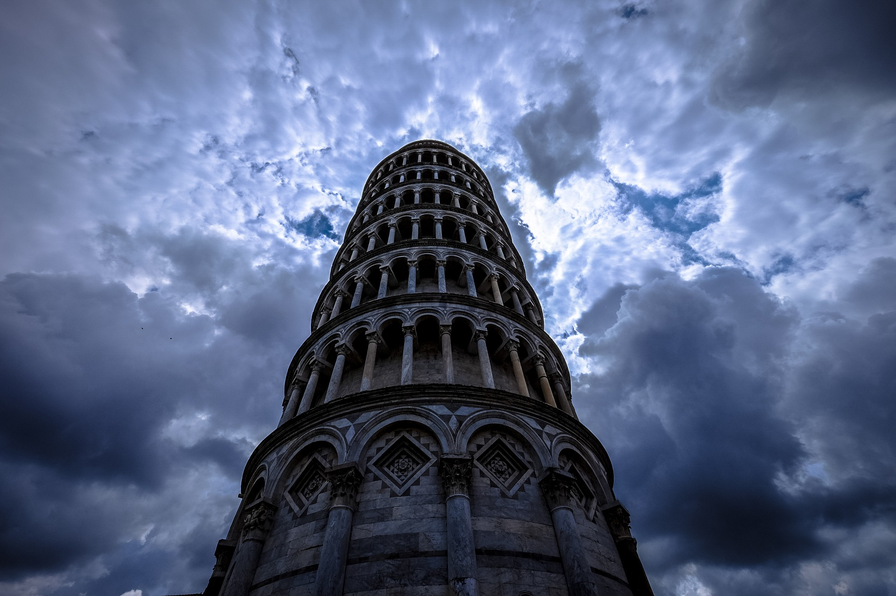

LA TOUR PISE
La tour de Pise (torre di Pisa en italien) est le campanile de la cathédrale Notre-Dame de l’Assomption de Pise, en Toscane (Italie). Elle est située à proximité du chevet de la cathédrale et fait partie des monuments de la piazza dei Miracoli (la « place des Miracles »), inscrit au patrimoine mondial de l'UNESCO. Sa construction débuta en 1173. Mondialement connue, elle est un des symboles de l’Italie et l’emblème de la ville de Pise. Outre le fait qu’elle soit considérée comme un chef-d’œuvre de l’art roman toscan en marbre, sa célébrité vient notamment de son inclinaison caractéristique (qui est actuellement d’un angle de 3° 59′ vers le sud), apparue très rapidement pendant sa construction, du fait qu’elle ait été édifiée sur une plaine alluviale. Ce défaut serait dû soit à un défaut de fondation, soit à un affaissement de terrain dû à une roche : la marne. Fermé au public pour des raisons de sécurité le 7 janvier 1990, le monument a été visité par 31 millions de personnes au cours des soixante années précédentes. Devant le risque d’écroulement, d’importants travaux ont été engagés à partir de 1993.
